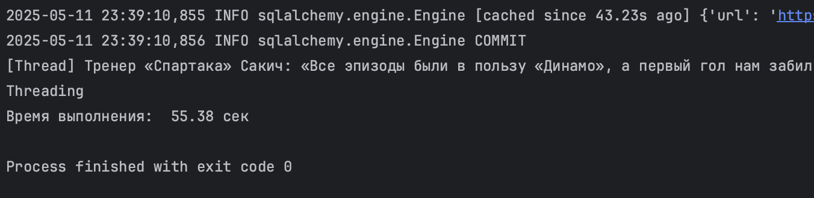
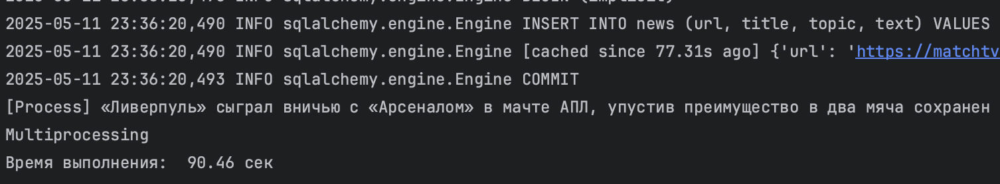
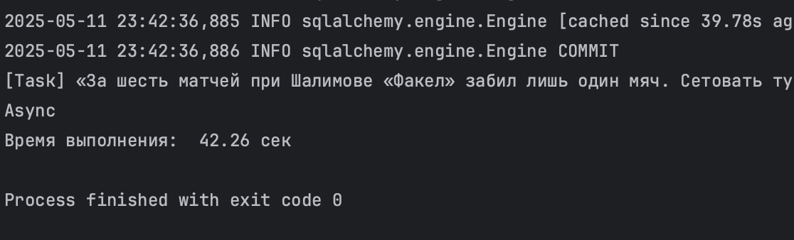
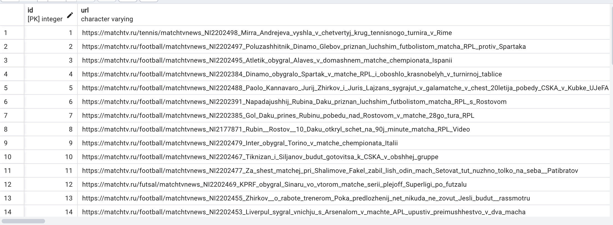

Задание №2. Параллельный парсинг веб-страниц с сохранением в базу данных
Цель:
Написать программу на Python для параллельного парсинга нескольких веб-страниц с сохранением данных в базу данных с использованием подходов threading, multiprocessing и async. Каждая программа должна парсить информацию с нескольких веб-сайтов, сохранять их в базу данных.
Ход работы:
В рамках данной лабораторной работы был выбран ресурс "МАТЧ ТВ", а в качества объекта парсинга - новости. Первым делом было реализовано подключение к бд и создание модели новости:
from contextlib import contextmanager
from sqlmodel import SQLModel, create_engine, Session
import os
from dotenv import load_dotenv
load_dotenv()
db_url = os.getenv('DB_ADMIN')
engine = create_engine(db_url, echo=True)
def init_db():
SQLModel.metadata.drop_all(engine)
SQLModel.metadata.create_all(engine)
@contextmanager
def get_session():
session = Session(engine)
try:
yield session
finally:
session.close()
class News(SQLModel, table=True):
id: int = Field(default=None, primary_key=True)
url: str
title: str
topic: str
text: str
И подготовим универсальные функции для парсинга:
def get_article_text(url):
response = requests.get(url)
soup = BeautifulSoup(response.text, "html.parser")
content_div = soup.find("div", class_="article__content")
if not content_div:
return "Нет основного текста"
paragraphs = content_div.find_all("p")
text = "\n".join(p.get_text(strip=True) for p in paragraphs)
return text
def get_articles():
response = requests.get("https://matchtv.ru/news")
soup = BeautifulSoup(response.text, "html.parser")
articles = soup.find_all("a", class_="node-news-list__item")
return articles
def get_topic(url):
response = requests.get(url)
soup = BeautifulSoup(response.text, "html.parser")
topic_elem = soup.find_all("li", class_="credits__item")
return topic_elem[1].get_text(strip=True) if topic_elem else None
Далее приступаем к реализации каждого процесса: 1.Threading.
def parse_and_save(article):
try:
href = article.get("href")
full_url = "https://matchtv.ru" + href
title_elem = article.find("div", class_="node-news-list__title")
title = title_elem.get_text(strip=True) if title_elem else "Нет заголовка"
topic_elem = article.find_all("li", class_="credits__item")
topic = topic_elem[1].get_text(strip=True) if topic_elem else "Нет темы"
result = {
"url": full_url,
"title": title,
"topic": topic,
"text": get_article_text(full_url)
}
with get_session() as session:
new = News.model_validate(result)
session.add(new)
session.commit()
print(f"[Thread] {title} сохранена")
except Exception as e:
print(f"[Thread Error] № {title}: {e}")
def handle_article_threading(chunk):
for article in chunk:
parse_and_save(article)
def main():
articles = get_articles()
num_threads = 4
step = len(articles) // num_threads
threads = []
for i in range(num_threads):
start = i * step
if i != num_threads - 1:
end = (i + 1) * step + 1
else:
end = len(articles) + 1
t = threading.Thread(target=handle_article_threading, args=(articles[start:end],))
threads.append(t)
t.start()
for t in threads:
t.join()
if __name__ == "__main__":
init_db()
start = time.time()
main()
print("Threading")
print(f"Время выполнения: {time.time() - start: .2f} сек")
В результате получаем:

2.Multiprocessing.
def parse_and_save(href, title):
try:
full_url = "https://matchtv.ru" + href
topic_elem = get_topic(full_url)
topic = topic_elem if topic_elem else "Нет темы"
result = {
"url": full_url,
"title": title,
"topic": topic,
"text": get_article_text(full_url)
}
with get_session() as session:
new = News.model_validate(result)
session.add(new)
session.commit()
print(f"[Process] {title} сохранен")
except Exception as e:
print(f"[Process Error] № {title}: {e}")
def handle_article_threading(chunk):
for href, title in chunk:
parse_and_save(href, title)
def main():
articles = get_articles()
num_processes = 4
step = len(articles) // num_processes
processes = []
for i in range(num_processes):
start = i * step
if i != num_processes - 1:
end = (i + 1) * step + 1
else:
end = len(articles) + 1
chunk_data = [(a.get("href"),
a.find("div", class_="node-news-list__title").get_text(strip=True) if a.find("div", class_="node-news-list__title") else "Нет заголовка")
for a in articles[start:end]]
process = multiprocessing.Process(target=handle_article_threading, args=(chunk_data,))
processes.append(process)
process.start()
for process in processes:
process.join()
if __name__ == "__main__":
init_db()
start = time.time()
main()
print("Multiprocessing")
print(f"Время выполнения: {time.time() - start: .2f} сек")
В результате получаем:

3.Asyncio
async def get_article_text(url, session):
try:
async with session.get(url) as response:
html = await response.text()
soup = BeautifulSoup(html, "html.parser")
content_div = soup.find("div", class_="article__content")
if not content_div:
return "Нет основного текста"
paragraphs = content_div.find_all("p")
return "\n".join(p.get_text(strip=True) for p in paragraphs)
except Exception as e:
print(f"[Async Error] {url}: {e}")
return "Ошибка при получении текста"
async def get_articles():
connector = aiohttp.TCPConnector(ssl=False)
async with aiohttp.ClientSession(connector=connector) as session:
try:
async with session.get("https://matchtv.ru/news") as response:
html = await response.text()
soup = BeautifulSoup(html, "html.parser")
return soup.find_all("a", class_="node-news-list__item")
except Exception as e:
print(f"[Async Error] get_articles: {e}")
return []
async def parse_and_save(article, session):
try:
href = article.get("href")
full_url = "https://matchtv.ru" + href
title_elem = article.find("div", class_="node-news-list__title")
title = title_elem.get_text(strip=True) if title_elem else "Нет заголовка"
topic_elem = article.find_all("li", class_="credits__item")
topic = topic_elem[1].get_text(strip=True) if topic_elem else "Нет темы"
text = await get_article_text(full_url, session)
result = {
"url": full_url,
"title": title,
"topic": topic,
"text": text
}
with get_session() as db_session:
new = News.model_validate(result)
db_session.add(new)
db_session.commit()
print(f"[Task] {title} сохранена")
except Exception as e:
print(f"[Task Error] № {title}: {e}")
async def handle_article_async(chunk):
async def run_articles():
connector = aiohttp.TCPConnector(ssl=False)
async with aiohttp.ClientSession(connector=connector) as session:
tasks = [parse_and_save(article, session) for article in chunk]
await asyncio.gather(*tasks)
await run_articles()
async def main():
articles = await get_articles()
num_tasks = 4
step = len(articles) // num_tasks
for i in range(num_tasks):
start = i * step
if i != num_tasks - 1:
end = (i + 1) * step + 1
else:
end = len(articles) + 1
await handle_article_async(articles[start:end])
if __name__ == "__main__":
init_db()
start = time.time()
asyncio.run(main())
print("Async")
print(f"Время выполнения: {time.time() - start: .2f} сек")
В результате получаем:

Ну и на последок посмотрим, как заполняется бд:

Вывод:
Async стал самым быстрым по времени работы. Ввиду того, что парсинг это IO-задача (ввод-вывод) и требуется ожидание при загрузке страниц. Вместо ожидания ответа от сервера, код сразу переключается на другую задачу — нет простаивания.
Threading стал вторым по скорости работы. Также хорош для IO-задач (ввод-вывод), но ожидание в рамках многопоточности обходится явно дороже, чем в асинхронности.
Multiprocessing крайне неэффективен при парсинге, так как больше полезен при тяжёлых вычислениях и происходит переплата по ресурсам для лёгких задач. Создаются полноценные процессы, а не потоки, поэтому и получается проигрыш по времени.